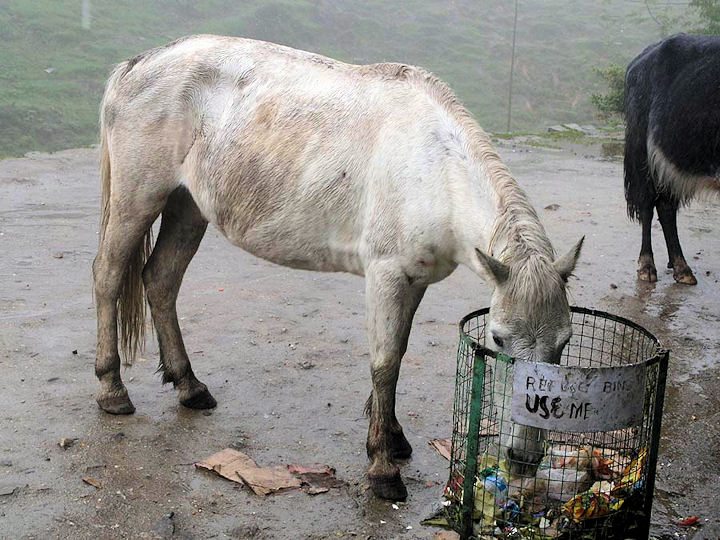

mailto:payer@payer.de
Zitierweise | cite as:
Payer, Alois <1944 - >: Sanskritkurs. -- Lösung der Übungen. -- Übungen Lektion 36 - 40. -- Fassung vom 2009-01-21. -- URL: http://www.payer.de/sanskritkurs/uebung36.htm
Erstmals hier publiziert: 2009-01-21
Überarbeitungen:
Anlass: Lehrveranstaltungen 1980 - 1984
©opyright: Dieser Text steht der Allgemeinheit zur Verfügung. Eine Verwertung in Publikationen, die über übliche Zitate hinausgeht, bedarf der ausdrücklichen Genehmigung des Verfassers
Dieser Text ist Teil der Abteilung Sanskrit von Tüpfli's Global Village Library
Falls Sie die diakritischen Zeichen nicht dargestellt bekommen, installieren Sie eine Schrift mit Diakritika wie z.B. Tahoma.
Die Devanāgarī-Zeichen sind in Unicode kodiert. Sie benötigen also eine Unicode-Devanāgarī-Schrift.
A) Folgende Wurzeln haben sowohl redupliziertes wie periphrastisches Perfekt. Bilden Sie zu folgenden Formen die entsprechenden periphrastischen und reduplizierten Perfektformen:
B) Die Wurzel आस् "sitzen" hat periphrastisches Perfekt. Bilden sie dieses zu folgenden Formen:
C) Bilden Sie das entsprechende Perfekt zu folgenden Formen:
D) Übersetzen Sie:
पुत्रे जाते सुगतः कुलं धनं च तत्याजागाराच्चानगर्यं प्रवव्राज । बुद्ध्यार्यसत्यानि प्रज्ञाय प्रज्ञया च दुःखान्मुक्तो मोक्तुकामार्यजनान्बोधयामासेति भिक्षव आहुः ॥१॥
Als ihm ein Sohn geboren war, verließ der Wegvollender Familie und Besitz und ging aus dem Heim in die Heimlosigkeit. Er erkannte mit seinem Verstand die Edlen Wahrheiten, wurde durch die Erkenntnis vom Leiden befreit und brachte die edlen Menschen, die Erlösung wünschten, zur Einsicht. All dies sagen die Mönche.
ब्राह्मणा महादेवयज्ञायाग्निं चिक्यिरे । ब्राह्मणेष्विन्द्रादिदेवान्स्तुवत्स्वग्निर्यज्ञान्नमाश । एवं यज्ञेन ब्राह्मणा महादेवैरादयां चक्रुस्तांश्च स्तोत्रानि श्रावयां बभूवुः ॥२॥
Die Brahmanen schichteten für das große Götteropfer ein Feuer auf. Während die Brahmanen Indra und die anderen Götter priesen, verzehrte das Opferfeuer die Speise. So gaben die Brahmanen durch das Opfer den großen Göttern zu Essen und ließen sie Lobeshymnen hören.
रक्षितधर्मक्षत्रिययोधा महानगरं जेतुकामाञ्छत्रून्विजिग्युर्न तु जघ्नुः ॥३॥
Die Kṣatriyakrieger, die das Recht hüteten, besiegten die Feinde, die die große Stadt erobern wollten, töteten sie aber nicht.
अधीतवेदद्विजो द्विजधर्मं वेद ॥४॥
Ein Zweimalgeborener, der den Veda studiert hat, kennt Recht und Sitte der Zweimalgeborenen.
विद्ययैव जीवितुं न शक्यते । य एवं विदुर्नाधीयीरन् ॥५॥
Von Wissenschaft kann man nicht leben. Wer das weiß, sollte nicht studieren.
स साधुर्दुर्जनपापलोभमतिमीक्षां चक्रे ॥६॥
Dieser Heilige sah das böse, gierige Herz der bösen Leute.
ब्राह्मणीभिः स्वान्नानि पेचिरे ॥७॥
Die Brahmaninnen haben feine Speisen gekocht.
Abb.: विद्ययैव जीवितुं न शक्यते
Banaras Hindu University (BHU) = काशी हिन्दू
विश्वविद्यालय
[Bildquelle: onbangladesh. --
http://www.flickr.com/photos/onbangladesh/2900792661/. -- Zugriff am
2009-01-20. --
Creative Commons Lizenz (Namensnennung, krinr kommerzielle Nutzung)]
Übersetzen Sie:
1. महाभारत १३.७.२५-२६
येन प्रीणति पितरं
तेन प्रीतः प्रजापतिः ।
प्रीणति मातरं येन
पृथिवी तेन पूजिता ।
येन प्रीणात्युपाध्यायं
तेन स्याद्ब्रह्म पूजितम् ।
सर्वे तस्यादृता धर्मा
यस्यैते त्रय आदृताः ।
अनादृतास्तु यस्यैते
सर्वास्तस्याफलाः क्रियाः ॥Womit man seinen Vater erfreut, damit wird der Schöpfer erfreut;
Womit man seine Mutter erfreut, damit wird die Erde verehrt;
Womit man den Lehrer erfreut, damit wird der Veda verehrt.
Wer diese drei achtet, der achtet alle Vorschriften,
Wer diese nicht achtet, von dem fruchten alle Rituale nichts.
2. मनुस्मृति ४.१५४ über der rechte Verhalten gegenüber Alten:
अभिवादयेद्वृद्धांश्च दद्याच्चैवासनं स्वकम् ।
कृताञ्जलिरुपासीत गच्छतः पृष्ठतो ऽन्वियात् ॥Man begrüße Alte formgerecht, überlasse ihnen seinen Sitz und stehe bei ihnen mit gefalteten Händen. wenn ein Alter geht, gehe man hinter ihm.
3. मनुस्मृति २.९८: Wer ein जितेन्द्रिय ist:
श्रुत्वा स्पृष्ट्वा च दृष्ट्वा च भुक्त्वा घ्रात्वा च यो नरः ।
न हृष्यति ग्लायति वा स विज्ञेयो जितेन्द्रियः ॥Wenn ein Mann sich nicht freut oder verdrießt, wenn er hört, berührt, sieht, schmeckt oder richt, dann kann man wissen, dass er seine Sinne besiegt hat.
4. मनुस्मृति २.११० über rechte Verhalten eines Brahmanen:
नापृष्टः कस्यचिद्ब्रूयान्न चान्यायेन पृच्छतः ।
जानन्नपि हि मेधावी जडवल्लोक आचरेत् ॥Nicht soll er etwas sagen, wenn er nicht gefragt wird, auch nicht, wenn er in ungehöriger Weise gefragt wird.
Auch ein wissender Weiser soll sich in der Welt wie ein Dummkopf geben.

Abb.: भुक्त्वा
घ्रात्वा च
न हृष्यति ग्लायति वा
Sikkim = सिक्किम
[Bildquelle: juicyrai. --
http://www.flickr.com/photos/wink/234707341/. -- Zugriff am 2009-01-20. --
Creative
Commons Lizenz (Namensnennung, keine kommerzielle Nutzung, share alike)]
Bestimmen und übersetzen Sie folgende Wortformen auf alle möglichen Weisen:
(Auflösung ohne Anspruch auf Vollständigkeit!)
Abb.: जगौ
Baul = বাউল mit Dotara
= দোতারা, Shantikniketan = শান্তিনিকেতন
[Bildquelle: paulancheta. --
http://www.flickr.com/photos/paulancheta/3164774529/. -- Zugriff am
2009-01-20. --
Creative
Commons Lizenz (Namensnennung, keine kommerzielel Nutzung, keine
Bearbeitung)]
A) Beantworten Sie folgende Fragen auf Sanskrit mit Hilfe der in Klammern angegebenen Wörter. Übersetzen Sie die Fragesätze.
Beispiel: क आगच्छति (राम) । » राम आगच्छति ।
कस्मै ब्राह्मण्यन्नं ददौ ॥१॥ (भिक्षु, बाला, दास, भगवन्त्)
भिक्षवे । भिक्षुभ्यो । बालायै । बालाभ्यो । दासाय । दासेभ्यो । भगवते । भगद्भ्यो ब्राह्मण्यन्नं ददौ ॥१॥
क आर्यसत्यान्यजानात् ॥२॥ (बुद्ध, शाक्यमुनि)
बुद्ध आर्यसत्यान्यजानात् । शाक्यमुनिरार्यसत्यान्यजानात् ॥२॥
कुत्राग्निश्चीयते ॥३॥ (यज्ञस्थान, मही)
यज्ञस्थाने ऽग्निश्चीयते । मह्यामग्निश्चीयते ॥३॥
कदा ब्राह्माणा घृतमग्नौ जुह्वति ॥४॥ (यज्ञकाल, देवान् स्तु <Absolutiv>)
यज्ञकले ब्राह्माणा घृतमग्नौ जुह्वति । देवान्स्तुत्वा ब्राह्माणा घृतमग्नौ जुह्वति ॥४॥
कस्मान्मतिमतयः पुण्यं चक्रुः ॥५॥ (स्वर्गलोभ, नरकभय, भीतनरकता)
स्वर्गलोभान्मतिमतयः पुण्यं चक्रुः । नरकभयान्मतिमतयः पुण्यं चक्रुः । भीतनरकताया मतिमतयः पुण्यं चक्रुः ॥५॥
किमेव शस्त्रं छिनत्ति ॥६॥ (शरीर, अजीव)
शरीरमेव शस्त्रं छिनत्ति । अजीवमेव शस्त्रं छिनत्ति ॥६॥
किंकामः शत्रुरार्यैः सह युयुधे ॥७॥ (धनं जि)
धनं जेतुकामः शत्रुरार्यैः सह युयुधे ॥७॥
कया भिक्षुरादितः ॥८॥ (गुणवती शूद्रा)
गुणवत्या शूद्रया भिक्षुरादितः ॥७॥
कुतः सुपुनर्भवं गम्यते ॥९॥ (कृतपुण्यत्व, सुनीति)
कृतपुण्यत्वात्सुपुनर्भवं गम्यते । सुनीतेः । सुनीत्याः । सुनीतितः सुपुनर्भवं गम्यते ॥९॥
केन शूद्रा न काम्येत ॥१०॥ (द्विजाति, ब्राह्मण, साधु)
द्विजातिना । ब्राह्मणेन । साधुना शूद्रा न काम्येत ॥१०॥
किमर्थं सुगतो ऽगारादनगार्यं प्रवव्राज ॥११॥ (दुःखमोक्ष, मोक्षनयन्ती प्रज्ञा)
दुःखमोक्षस्यार्थं । दुःखमोक्षार्थं सुगतो ऽगारादनगार्यं प्रवव्राज । मोक्षनयन्त्याः प्रज्ञाया अर्थं सुगतो ऽगारादनगार्यं प्रवव्राज ॥११॥
कस्याः पुत्रः कृष्ण आसीत् ॥१२॥ (देवकी)
देवक्याः पुत्रः कृष्ण आसीत् ॥१२॥
क्व मर्तुं सज्जना इच्छन्ति ॥१३॥ (काशी = वाराणसी)
काश्यां । वाराणस्यां मर्तुं सज्जना इच्छन्ति ॥१३॥
केषां धर्मो वेदाध्ययनम् ॥१४॥ (द्विज, द्विजाति, आर्य)
द्विजानां । द्विजातीनां । आर्याणां धर्मो वेदाध्ययनम् ॥१४॥
कैर्वेदः प्रोक्तः ॥१५॥ (ऋषि)
ऋषिभिर्वेदः प्रोक्तः ॥१५॥
कस्मिञ्जात आर्यः सुखमाप्नोति ॥१६॥ (पुत)
पुत्रे जात आर्यः सुखमाप्नोति ॥१६॥
का नरा लुभ्यन्ति ॥१७॥ (सुरूपशरीरा, देवीरूपा)
सुरूपशरीरा । देवीरूपा नरा लुभ्यन्ति ॥१७॥
के नराः सुरूपा लुभ्यन्ति ॥१८॥ (समोह, बुद्धिमन्त्)
समोहा । बुद्धिमन्तो नराः सुरूपा लुभ्यन्ति ॥१८॥
कस्या इन्द्रः पुत्रं दास्यति ॥१९॥ (कृतव्रता पुण्यवती सुमतिब्राह्मणी)
कृतव्रतायै पुण्यवतै सुमतये । सुमत्यै । ब्राह्मण्या इन्द्रः पुत्रं दास्यति । ... ब्राह्मण्यायिन्द्रः पुत्रं दास्यति ॥१९॥
B) Übersetzen Sie:
किं स्थितप्रज्ञः प्रव्रजेत्किमगारे पुत्रेषु वसेत् ॥१॥
Soll jemand, des Einsicht festgegründet ist, in die Heimlosigkeit gehen oder soll er daheim bei seinen Söhnen bleiben?
अपि गुरुः सत्यं जानाति ॥२॥
Kennt der Meister auch die Wahrheit?
कच्चिच्छुद्रा द्विजदासाः ॥३॥
Ist der Śūdra Leibeigener der Zweimalgeborenen?
कच्छिच्छुद्रो भारमाबिभः ॥४॥
Hat der Śūdra die Last gebracht?
C) Übersetzen Sie folgende अव्ययीभाव :
1. अति Postposition mit Akk.: "über ... hinaus"
2. अधि "in"
3. अनु "entsprechend, entlang, nach"
4. अप "ohne"
5. अभि "in Richtung auf"
6. आ "seit, bis, einschließlich"
. उप "nahe"
8. यथा
Abb.: पुत्रे जात आर्यः
सुखमाप्नोति
[Bildquelle:
amee@work. --
http://www.flickr.com/photos/amee_photo/3122658519/in/photostream/. --
Zugriff am 2009-01-20. --
Creative
Commons Lizenz (Namensnennung, keine kommerzielle Nutzung, keine
Bearbeitung)]
Übersetzen Sie ins Sanskrit indem Sie ausschließlich Verbformen des Perfekt verwenden:
Als einmal irgendein Greis in ein anderes Dorf ging, ermüdete er unterwegs. Da ging er, um sich auszuruhen, zum Fuß eines an der Seite stehenden Mangobaums. Auf diesem Baum gab es reife Früchte. Der Greis bekam Lust auf diese. Aber er konnte nicht auf den Baum steigen und nach den Früchten greifen. Zum Glück waren auf diesem Baum irgendwelche Affen, die Früchte fraßen. Als er diese erblickte, freute sich der Greis. Was tat er? Er nahm einige Steine, zielte auf die Affen und warf. Die erbosten Affen pflückten irgendwelche Früchte und warfen sie auf den Greis. Der Greis nahm diese erfreut und ging in seine gewünschte Gegend. Siehe, das Geschick des Greises!
एकदा कश्चिद्वृद्धो ग्रामान्तरं गच्छन्पथि श्रान्तो ऽभवत् । अतः स विश्रमाय पार्श्वस्थितस्य चूततरोर्मूलमगच्छत् ॥ तस्मिन्वृक्षे पचेलिमानि फलान्यवर्तन्त । वृद्धस्य तेषु स्पृहा जाता । परं स वृक्षमारुह्य तानि ग्रहीतुं नाशक्नोत् ॥ दिष्ट्या तस्मिन् तरौ केचिद्वानराः फलानि खादन्तः स्थिताः । तानवलोक्य वृद्धः प्रहर्षं गतः । स किमकरोत् । स कतिचिदुपलानादाय वानरांल्लक्ष्यीकृत्य प्राक्षिपत् । वानराः कुपिताः कानिचित्फलान्यवचित्य वृद्धं प्रति प्राक्षिपन् । वृद्धः सहर्षं तान्यादाय स्वाभीष्टदेशं गतः ॥ अहो वृद्धस्य कौशलम् ॥
A) Setzen Sie in folgenden Sätzen die entsprechende Form der Wörter in Klammern ein und übersetzen Sie:
... (सप्तमी विभक्तिः) ... धर्मं रक्षत्यभया जनाः ॥१॥ (राजन्)
राज्ञि । राजनि धर्मं रक्षत्यभया जनाः ॥१॥
Wenn der König Recht und Sitte hütet, sind die Leute ohne Angst und Furcht.
आसीद्राजपुत्रो गौतमस् ... सुकृतकर्मोप्पन्नो बुध्या रूप्यमितबलः ॥२॥ (नामन्)
आसीद्राजपुत्रो गौतमो नाम सुकृतकर्मोप्पन्नो बुध्या रूप्यमितबलः ॥२॥
Es war einmal ein Königssohn - Gautama war sein Name - er hatte seine Aufgaben gut erfüllt, war voll Einsicht, schön, von unermesslicher Kraft.
राज्यस्य ... (सप्तमी बहुवचने) ... अरयो राजानं योद्धुं तिष्ठन्ति ॥३॥ (सीमन्)
राज्यस्य सीमस्वरयो राजानं योद्दुं तिषठन्ति ॥३॥
An den Grenzen des Reichs stehen Feinde, um den König zu bekämpfen.
वैश्यानां कानि ... ॥४॥ (नामन्)
वैश्यानां कानि नामानि ॥४॥
Was für Namen haben Vaiśyas?
वैश्यास् ... ॥५॥ (किंनामन्)
वश्याः किंनामानः ॥५॥
Was für Namen haben Vaiśyas?
... (सप्तम्येकवचने) ... अकर्म यः पश्येदकर्मणि च कर्म यः स बुद्धिमान्मनुष्येषु स युक्त इति भगवद्गीतायाम् ॥६॥ (कर्मन्)
कर्मण्यकर्म यः पश्येदकर्मणि च कर्म यः स बुद्धिमान्मनुष्येषु स युक्त इति भगवद्गीतायाम् ॥६॥
In der Bhagavadgītā steht, dass wer im Tun Nichttun und im Nichttun Tun sieht, weise unter den Menschen ist und ein Yogin.
किम् ... किमकर्मेति कवयो ऽप्यत्र मोहिताः ॥७॥ (कर्मन्)
किं कर्म किमकर्मेति कवयो ऽप्यत्र मोहिताः ॥७॥
Selbst Dichter sind darüber verwirrt worden, was Tun und was Nichttun ist.
ब्रह्मभूतस् ... (प्रथमैकवचने) ... न शोचति न लुभ्यति ॥८॥ (प्रसन्नात्मन्)
ब्रह्मभूतः प्रसन्नात्मा न शोचति न लुभ्यति ॥८॥
Wer zum Absoluten geworden ist, wessen Seele abgeklärt ist, der trauert nicht und begehrt nicht.
... (षष्ठ्येकवचने) ... सुकृतस्य सुफलमाहुः ॥९॥ (कर्मन्)
कर्मणः सुकृतस्य सुफलमाहुः ॥९॥
Man sagt, dass eine gut getane Tat eine gute Frucht bringt.
महीभोगस् ... (शष्ठी बहुवचने) ... धर्मः ॥१०॥ (राजन्)
महीभोगो राज्ञां धर्मः ॥११॥
Recht der Könige ist, die Welt zu genießen.
रज्ञे ... दीयेरन् ॥११॥ (बलिन् हस्तिन्)
रज्ञे बलिनो हस्तिनो दीयेरन् ॥११॥
Starke Elefanten soll man dem König geben.
... (तृतीया विभक्तिः) ... लोका असृज्यन्त ॥१२॥ (ब्रह्मन् m.)
ब्रह्मणा लोका असृजन्त ॥१२॥
Brahmā hat die Welten erschaffen.
... (तृतीया विभक्तिः) ... कृतं पापं... (तृतीया विभक्तिः) ... अकृतं पापम् ॥१३॥ (आत्मन्)
आत्मना कृतं पापमात्मनाकृतं पापम् ॥१३॥
Selbst tut man Böses, selbst unterlässt man Böses.
सद्भिस् ... जनेभ्यो ऽभयं दीयते ॥१४॥ (राजन्)
सद्भी रजाभिर्जनेभ्यो ऽभयं दीयते ॥१४॥
Gute Könige schenken den Menschen Furchtlosigkeit.
... धर्मं न रक्षत्सु सभया जनाः ॥१५॥ (राजन्)
राजसु धर्मं न रक्षत्सु सभया जनाः ॥१५॥
Wenn Könige Recht und Sitte nicht hüten, sind die Menschen voll Furcht.
Abb.: रज्ञे बलिनो
हस्तिनो दीयेरन्
Surin = สุรินทร, Thailand
[Bildquelle: how3ird. --
http://www.flickr.com/photos/how3ird/3103689757/. -- Zugriff am 2009-01-20.
-- Creative
Commons Lizenz (Namensnennung, keine kommerzielle Nutzung)]
दश मूढाः
मूढानां चेष्टितानि प्रायेण विनोदावहानि । यथा हि -- एकदा दश मूढा देशाटनाय प्रस्थिताः । किञ्चिद्दूरं गतानां तेषामुपस्थिता काचिदगाधा नदी । बाहुभ्यां तरन्तस्ते कथमपि नदीं तीर्त्वा पारं गताः ॥
आसीत्तेषां मध्ये कश्चन वृद्धः । स किं सर्वे तीरमनुप्राप्ता ईति जिज्ञासमानस्तानेकैकशो गणयामास । परं नवैव परिगणितास्तेन । ततः स आक्रोशत् । अहो वयम् दश प्रस्थिताः । इदानीं नवैव स्मः । नूनमस्माकमेको नद्यां निमग्नः । गवेषयत तमिति । ततस्तेषामेकैको ऽपि गणनां चकार । परं नवैव दृश्यन्ते । ततस्तेषां व्याकुलीभूतानां महान्कोलाहलः समजनि । तत्रैव नातिदूरे कस्यचिदृषेराश्रमो ऽवर्तत । तत्र वसन्नृषिस्तेषां विवेष्टितमवलोक्योच्चैर्जहास । तस्य हासशब्दं श्रुत्वा मूढास्तरसा समुपसृत्य हासकारणमपृच्छन् । ऋषिराह । अहो । अनात्मज्ञा यूयम् । युष्माकमेकैको ऽपि नात्मानमगणयत् । तेनायं व्यामोहः संजात इति । तदाकर्ण्य ते मूढाः सलज्जमधोमुखाः प्रययुः ॥ (संस्कृतप्रथमादर्शः)
Zehn Deppen.
Das Treiben von Deppen ist meist unterhaltsam. So zum Beispiel: Einst sind sind zehn Deppen aufgebrochen, um im Land herumzuschweifen. Als sie ein Stück weit gegangen waren, stellte sich ihnen ein tiefer Fluss in den Weg. Mit den Armen rudernd haben sie irgendwie den Fluss überquert und sind ans andere Ufer gekommen.
Unter ihnen war ein Alter. Er wollte wissen, ob alle ans Ufer gekommen sind, und zählte darum jeden einzelnen. Aber er zählte nur neun. Da schrie er: "Hallo! wir sind zu zehnt aufgebrochen, jetzt sind wir nur neun! Sicherlich ist einer im Fluss ertrunken! Sucht nach ihm!" Daraufhin zählte jeder einzelne von ihnen nach. Aber es waren nur neun! Da wurden sie aufgeregt und es entstand ein großes Geschrei. Nicht weit von dort war die Einsiedelei eines Ṛṣi. Der dort wohnhafte betrachtete ihr Herumsuchen und lachte laut. Die Deppen hörten sein Gelächter, gingen schnell zu ihm und fragten ihn, warum er lache. Der Ṛṣi sagte: "Ha! Ihr kennt euch selbst nicht. Jeder einzelne von euch hat sich selbst nicht mitgezählt. Deswegen ist diese Verwirrung entstanden." Als sie das hörten, sind die Deppen beschämt gesenkten Hauptes abgezogen.
Bilden Sie zu folgenden Verbformen die Formen der ersten Person, die dieser Verbform in Zahl, Zeit, Modus (Indikativ, Optativ) und Aktionsweise (P, Ā, Passiv) entsprechen.
Beispiel: गच्छन्ति » गच्छामस्
Abb.: आगारे सीदामः
[Bild: Payer]
A) Übersetzen sie die सुभाषितानि am Beginn der Lektion.
विद्या ददाति विनयं
विनयाद्याति पात्रताम् ।
पात्रत्वाद्धनमाप्नोति
धनाद्धर्मं ततः सुखम् ॥१॥Wissen ergibt rechtes Betragen, wegen rechten Betragens wird man ehrenswert; wenn man ehrenswert ist, wird man reich; wenn man reich ist wird man gerecht, davon glücklich.
सुखार्थी चेत्त्यजेद्विद्यां
विद्यार्थी चेत्त्यजेत्सुखम् ।
सुखार्थिनः कुतो विद्या
कुतो विद्यार्थिनः सुखम् ॥२॥Wenn man auf der Suche nach Glück das Wissen aufgibt, wenn man auf der Suche nach Wissen das Glück aufgibt: woher sollte man dann als Glücksuchender Wissen haben, woher als Wissensuchender Glück?
आचार्यात्पादमादत्ते
पादं शिष्यः स्वमेधया ।
पादं सब्रह्मचारिभ्यः
पादं कालक्रमेण च ॥३॥Ein Schüler erhält ein Viertel (des Wissens) von seinem Lehrer, ein Viertel von seinem eigenen Verstand, ein Viertel von seinen Mitschülern und ein Viertel durch den Lauf der Zeit.
B) Verwandeln Sie folgende Verbalformen in die entsprechenden Perfektformen. Bei mehreren Möglichkeiten, geben Sie bitte alle Möglichkeiten an.
(Zeichenerklärung: अ = अनिट्, इ = fakultativ अनिट्)
Abb.: आशिमेति
Belgaum = ಬೆಳಗಾವಿ / बेळगांव
[Bildquelle: shimonkey. --
http://www.flickr.com/photos/shimonkey/5321491/. -- Zugriff am 2009-01-21.
-- Creative
Commons Lizenz (Namensnennung, keine kommerzielle Nutzung, share alike)]
Lösungen ohne Anspruch auf Vollständigkeit!
Abb.: काश्चन वाहिकाः
Karwar = ಕಾರವಾರ
[Bildquelle: Songkran. --
http://www.flickr.com/photos/thomasbrauner/847560576/. -- Zugriff am
2009-01-21. --
Creative
Commons Lizenz (Namensnennung, keine kommerzzielle Nutzung, share alike)]
Zu den Lösungen der Übungen 41 - 45